Cách đọc tài liệu này
Mỗi mục có hai lớp: khung “Vì sao” giải thích bản chất (tại sao hệ thống được làm như vậy), rồi đến các bước. Khi đã hiểu “vì sao”, thầy/cô sẽ tự đoán được cách xử lý cả những tình huống tài liệu chưa nhắc tới. Số trong vòng tròn đỏ trên ảnh ứng với chú thích ngay dưới ảnh.
Bức tranh tổng thể
Hệ thống gồm sáu “mảnh”. Hiểu mảnh nào giữ cái gì là chìa khóa để xử lý mọi sự cố.
Mảnh
Giữ cái gì
Ai thay đổi nó
Google Sheet
Toàn bộ câu hỏi của 4 cấp; cột Approved quyết định câu nào được dùng.
Thầy/cô (sửa, duyệt) và Claude (thêm bộ mới).
Thư mục trên máy Downloads\HSK
Bản gốc của game (classroom-feud/Classroom-Feud.html), tài liệu, TODO.md, các skill.
Claude, theo yêu cầu.
GitHub repo
Bản sao trên mạng của thư mục, kèm toàn bộ lịch sử thay đổi.
Claude “push” sau mỗi việc xong.
GitHub Pages
Trang web công khai chạy chính file game trong repo.
Tự động, không ai cần làm gì.
Bản trên Desktop
Một bản chép tay của file game, để mở khi không có mạng.
Thầy/cô hoặc Claude chép lại khi có bản mới.
Kho của trình duyệt
Danh sách lớp, lịch sử đã chơi, thư viện từ Excel, cài đặt âm thanh/ánh sáng, trận đang chơi dở.
Game tự lưu khi thầy/cô dùng.
Vì sao lại chia ra như vậy?
Mỗi mảnh làm đúng một việc mà nó giỏi nhất. Câu hỏi nằm trên Google Sheet vì dễ sửa, xem được ở mọi máy, Claude ghi vào được. Game là một file HTML duy nhất (âm thanh nhúng sẵn bên trong) nên chép đi đâu cũng chạy, không cần cài đặt. GitHub giữ lịch sử để không bao giờ mất bản cũ, và tự biến file game thành một trang web. Dữ liệu lớp học nằm trong trình duyệt vì game không có máy chủ riêng — đây là cái giá của sự đơn giản, và là lý do phải sao lưu (mục 4.5).
C:\Users\Admin\Desktop\CLASSROOM FEUD\ (địa chỉ bắt đầu bằng file:///)
Phiên bản
Luôn là bản mới nhất (tự cập nhật 1–2 phút sau mỗi lần Claude push).
Là bản tại lúc chép. Có bản mới thì phải chép lại (mục 4.4).
Cần mạng?
Cần để mở trang lần đầu.
Không cần (trừ khi tải câu hỏi mới từ Sheet).
Dùng ở máy khác
Gõ link là được.
Phải chép file qua USB/Drive.
Dữ liệu lớp, thư viện
Tách riêng — xem khung dưới.
Vì sao dữ liệu của hai bản tách riêng?
Trình duyệt cất dữ liệu của trang web vào một “ngăn kéo” gắn với nguồn gốc (origin) của trang: giao thức + tên miền. Link web có nguồn gốc https://trantrungg135family-tech.github.io; file mở bằng bấm đúp có nguồn gốc file://. Hai nguồn gốc khác nhau → hai ngăn kéo khác nhau, trang này không được phép đọc ngăn kéo của trang kia (đây là quy tắc bảo mật của mọi trình duyệt). Thêm nữa, mỗi trình duyệt (Chrome, Edge) và cửa sổ ẩn danh cũng có ngăn kéo riêng. Hệ quả: lớp 1A tạo ở bản web sẽ không thấy ở bản Desktop, và ngược lại. Hãy chọn một bản làm “bản chính” trên máy dạy (khuyên dùng link web) và chỉ tạo lớp ở đó. Muốn chuyển dữ liệu sang bản kia: Sao lưu thư viện rồi Khôi phục (mục 4.5).
Câu hỏi trong Google Sheet thì không bị ảnh hưởng: cả hai bản đều đọc thẳng từ Sheet.
Chi tiết kỹ thuật hữu ích
Khi mở bằng bấm đúp, Google không cho trang file:// tải Sheet theo cách thông thường. Game tự chuyển sang một cách tải dự phòng (JSONP), nên bản Desktop vẫn đọc được Sheet. Thầy/cô không cần làm gì — chỉ cần biết là “bấm đúp vẫn tải được Sheet”.
1.2 Màn Thiết lập
Đây là màn hiện ra khi mở game. Mọi chuẩn bị trước giờ học đều làm ở đây.
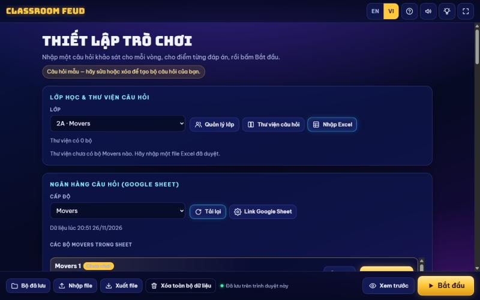
12345678910
1Ngôn ngữ giao diện EN / VI
2Cách chơi (?) và nút Âm thanh
3Light show (bóng đèn), Toàn màn hình
4Chọn lớp đang dạy
5Quản lý lớp
6Nhập Excel (cách cũ)
7Tải lại Google Sheet
8Đổi sang Sheet khác
9Xem trước bảng
10Bắt đầu trận
Hình 1. Màn Thiết lập (bản web, giao diện tiếng Việt, đã chọn lớp 2A · Movers).
Màn hình có bốn khối từ trên xuống: Lớp học & thư viện câu hỏi → Ngân hàng câu hỏi (Google Sheet) → Thông tin trò chơi → Các vòng chơi (nội dung câu hỏi của trận sắp chơi, sửa trực tiếp được). Thanh dưới cùng có: Bộ đã lưu, Nhập file, Xuất file (một bộ câu hỏi dạng JSON), Xóa toàn bộ dữ liệu, Xem trước, Bắt đầu.
Thông tin trò chơi
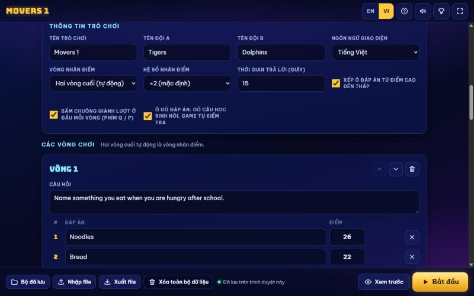
Hình 2. Khối Thông tin trò chơi: tên đội, vòng nhân điểm, hệ số, thời gian trả lời, bấm chuông, ô gõ đáp án.
Ô
Ý nghĩa
Tên trò chơi
Tự điền bằng tên bộ (vd. Movers 1) khi chọn bộ; hiện ở góc trái màn chơi.
Tên đội A / B
Đặt tên vui cho hai đội; được giữ nguyên khi đổi bộ.
Vòng nhân điểm
Hai vòng cuối (tự động) hoặc Tự chọn tối đa hai vòng.
Hệ số nhân điểm
×2 (mặc định) đến ×5.
Thời gian trả lời (giây)
Thời gian của đồng hồ (phím T). Đặt từ 8 giây trở lên thì có giọng “Hurry up!”.
Xếp ô từ điểm cao đến thấp
Bảng luôn xếp đúng thứ tự dù câu hỏi nhập lộn xộn.
Bấm chuông đầu mỗi vòng
Mỗi vòng bắt đầu bằng màn Bấm chuông (mục 1.8).
Ô gõ đáp án
Bật ô gõ để game tự chấm (mục 1.6). Bỏ chọn nếu muốn chỉ bấm tay.
1.3 Lớp học và cấp độ
Vì sao có “lớp”?
Mỗi lớp gắn với một cấp Cambridge (Starters, Movers, Flyers, KET). Nhờ vậy khi chọn lớp, game tự lọc đúng ngân hàng câu hỏi của cấp đó, và ghi nhớ lớp nào đã chơi bộ nào: bộ lớp chưa chơi được tô vàng “Chưa chơi”. Các lớp cùng cấp dùng chung câu hỏi, nhưng lịch sử là của riêng từng lớp — nên 2A và 2B cùng Movers vẫn không bị lặp bộ.
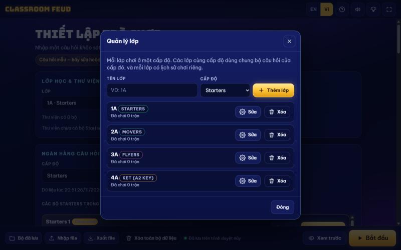
Hình 3. Quản lý lớp: thêm 1A · Starters, 2A · Movers, 3A · Flyers, 4A · KET.
Bấm Quản lý lớp.
Gõ tên lớp (tối đa 20 ký tự), chọn Cấp độ, bấm Thêm lớp.
Lặp lại cho các lớp khác. Sửa để đổi tên/cấp, Xóa để bỏ lớp.
Bấm Đóng, rồi chọn lớp ở ô Lớp mỗi lần vào dạy.
NhớLớp được lưu trong trình duyệt của máy này, bản này (mục 1.1). Tạo lớp ở bản bạn dùng hằng ngày.
1.4 Chọn bộ câu hỏi
Có ba nguồn câu hỏi. Nguồn chính là Google Sheet; hai nguồn còn lại để dự phòng.
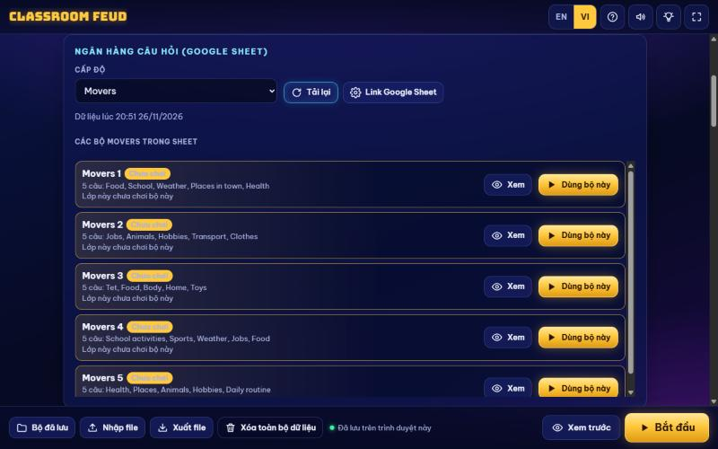
123456
1Cấp độ — tự theo lớp đã chọn
2Tải lại Sheet sau khi sửa/duyệt
3Thời điểm dữ liệu được tải
4Nhãn “Chưa chơi” (với lớp đang chọn)
5Xem trước nội dung bộ
6Nạp bộ vào phần soạn
Hình 4. Thẻ Ngân hàng câu hỏi (Google Sheet): mỗi bộ ghi số câu và chủ đề từng câu, kèm lịch sử của lớp.
a) Từ Google Sheet (cách chính)
Chọn lớp ở ô Lớp. Ô Cấp độ của Sheet tự chuyển theo (có thể đổi tay).
Nhìn danh sách bộ: ưu tiên bộ có nhãn vàng Chưa chơi. Bấm Xem để đọc trước.
Bấm Dùng bộ này. Câu hỏi được nạp vào khối “Các vòng chơi”; tên trò chơi = tên bộ; tên đội, hệ số, thời gian giữ nguyên.
Bấm Xem trước nếu muốn kiểm tra bảng, rồi Bắt đầu. Ngay khi bắt đầu, bộ được ghi vào lịch sử của lớp.
b) Từ thư viện (bộ đã nhập từ Excel)
Nằm ở khối trên cùng: sau khi chọn lớp, game liệt kê các bộ cùng cấp trong thư viện, bộ chưa chơi lên đầu. Nút Thư viện câu hỏi mở toàn bộ thư viện để tìm theo chủ đề, xem, xóa, sao lưu.
c) Nhập file Excel (cách cũ, vẫn dùng được)
Bấm Nhập Excel, chọn file .xlsx có các sheet Starters, Movers, Flyers, KET. Chỉ dòng có Y ở cột Approved được nhập; mỗi chủ đề trên một sheet thành một bộ (vd. Movers · Food). Nhập lại cùng cấp + chủ đề thì bộ cũ được cập nhật. Lần đầu cần Internet để tải bộ đọc Excel.
Vì sao Google Sheet là nguồn chính?
Excel nằm trong một file: sửa ở máy này thì máy kia không biết, và mỗi lần sửa phải nhập lại vào game. Sheet chỉ có một bản duy nhất trên mạng: sửa xong, bấm Tải lại là mọi máy, mọi bản game đều thấy. Claude cũng ghi được thẳng vào Sheet.
1.5 Luật chơi
Giành lượt. Đầu vòng, chọn đội trả lời bằng nút tên đội, bấm vào bục điểm, phím A/B, hoặc cho hai đội bấm chuông (mục 1.8). Bục đội đang trả lời sáng lên với nhãn “ĐANG TRẢ LỜI”.
Trả lời đúng → ô lật ra, điểm cộng cho đội đang trả lời. Mỗi ô chỉ tính một lần.
Trả lời sai → một dấu X. Lượt không tự đổi: đội đó tiếp tục cho tới khi đủ 3 X.
Đủ 3 X → bảng “CƠ HỘI CƯỚP ĐIỂM”: đội kia được một lần đoán. Trúng một đáp án còn ẩn → đội cướp nhận toàn bộ điểm còn lại trên bảng (cộng cả ô vừa đoán). Trượt → không ai nhận phần còn lại.
Vòng nhân điểm (mặc định hai vòng cuối, ×2): mọi điểm trong vòng — đáp án, cướp điểm, cộng tay — nhân đúng một lần. Ô 24 điểm hiện 48 kèm dòng “24 × 2”.
Bấm Vòng tiếp (N) khi đã sẵn sàng. Hết vòng cuối, bấm N lần nữa để sang màn kết quả.
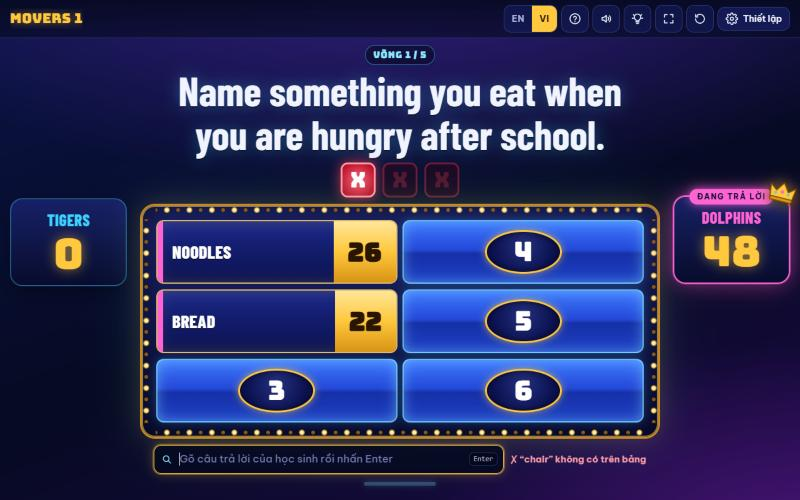
Hình 5. Sai một lần: ô X đầu tiên sáng đỏ, cạnh ô gõ ghi “‘chair’ không có trên bảng”.
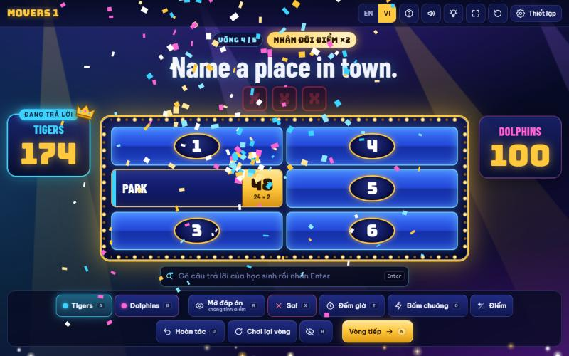
Hình 6. Vòng nhân điểm: nhãn “NHÂN ĐÔI ĐIỂM ×2”, ô ghi 48 và “24 × 2”.
Vì sao lượt không tự đổi và phải bấm “Vòng tiếp”?
Trong lớp học thật, giáo viên hay muốn dừng lại: giải thích từ mới, cho cả lớp đọc to đáp án, sửa phát âm. Nếu game tự nhảy vòng, thầy/cô sẽ bị cuốn theo nhịp máy. Vì vậy game chỉ đi tiếp khi thầy/cô ra lệnh — và mọi thao tác đều Hoàn tác được (U).
1.6 Ô gõ đáp án — game tự chấm thế nào
Dưới bảng có ô nhập. Học sinh nói đáp án, thầy/cô gõ lại rồi nhấn Enter. Không cần nhớ đáp án, không cần tự bấm ô hay phím X.
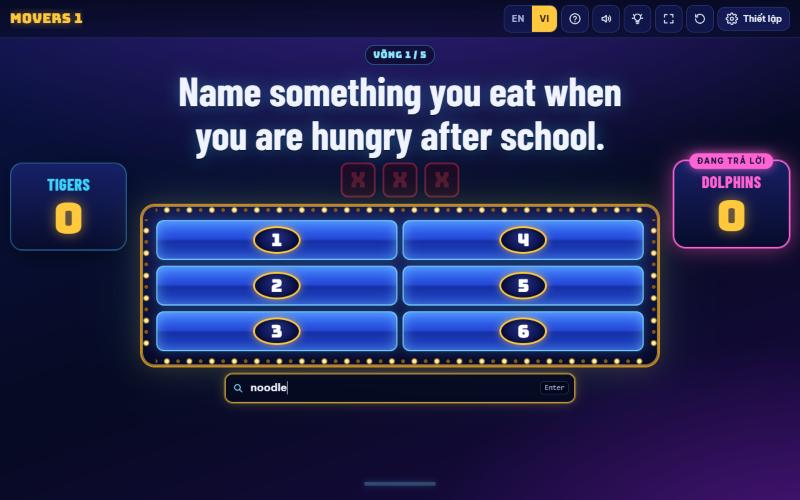
1234
1Ô gõ đáp án (đang gõ “noodle”)
2Đội đang trả lời
3Ba ô X (lượt sai)
4Dải điều khiển đã tự thu gọn
Hình 7. Màn chơi vòng 1. Gõ “noodle” — đáp án trên bảng là “Noodles”.
Năm kết quả có thể xảy ra khi nhấn Enter
Tình huống
Game làm gì
Trùng một đáp án đang ẩn
Ô lật ra (có trống dồn ngắn), cộng điểm, tính chuỗi đúng và vòng nhân điểm.
Trùng đáp án đã mở
Không tính sai; chỉ báo “Đáp án này đã có trên bảng: …”.
Không có trên bảng
Tính một lần sai (như phím X).
Gần giống nhưng chưa chắc
Hỏi lại Có phải ý là “…”? — Enter = đúng, mở ô · Backspace = không, tính sai · Esc = hủy để gõ lại.
Đang cướp điểm
Gõ câu đoán của đội cướp: trùng = cướp thành công, không trùng = cướp thất bại.
Hình 8. “noodle” khớp “Noodles” → ô lật, nhãn TOP ANSWER, cạnh ô gõ hiện ✓ Noodles.
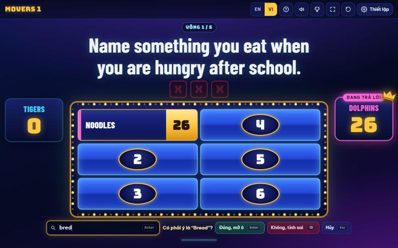
1234
1Câu hỏi lại “Có phải ý là ‘Bread’?”
2Đúng, mở ô (Enter)
3Không, tính sai (Backspace)
4Hủy, gõ lại (Esc)
Hình 9. Gõ “bred” (từ ngắn sai 1 chữ): game không tự quyết mà hỏi lại.Hình 10. Gõ lại “Noodles” khi ô đã mở: chỉ báo “Đáp án này đã có trên bảng”, không bị tính sai.
Bản chất của việc so khớp
Game không “hiểu” tiếng Anh; nó chuẩn hóa cả câu gõ lẫn đáp án về một dạng gọn rồi so sánh. Hiểu các bước này sẽ giúp thầy/cô viết đáp án trong Sheet sao cho game chấm đúng.
Chuẩn hóa: bỏ chữ hoa, dấu câu, dấu tiếng Việt, khoảng trắng thừa; bỏ a / an / the và some / my… ở đầu; “&” = “and”; số viết chữ = số (“two” = “2”).
Biến thể từ: số nhiều, đuôi -ing, -ed coi như nhau: “banana” = “Bananas”, “play football” = “Playing football”.
Một phần đáp án: được chấp nhận nếu là từ có nghĩa: “football” khớp “Playing football”, “bus” khớp “By bus”. Các từ quá chung như go, play, by, on, eat đứng một mình thì không tính.
Lỗi chính tả cho phép theo độ dài từ: ≤ 5 chữ phải đúng (sai 1 chữ thì game hỏi lại); 6–8 chữ cho sai 1; 9–13 chữ cho sai 2; dài hơn cho sai 3. Sai thêm một chữ nữa thì game hỏi lại. Hai chữ đảo chỗ (“raeding”) tính là một lỗi.
Từ đồng nghĩa: game không tự biết. Muốn chấp nhận nhiều cách nói, viết trong Sheet: TV / Television, Bike / Bicycle — trên bảng chỉ hiện phần đầu. Phần trong ngoặc cũng được chấp nhận: Tet (Lunar New Year) khớp cả “Tet” lẫn “Lunar New Year”.
Vì sao từ ngắn lại “khó tính” hơn?
Với từ ngắn, sai một chữ thường thành một từ khác hẳn: “cat” – “car”, “boots” – “books”. Nếu game tự chấp nhận thì sẽ chấm sai. Nên với từ ngắn game không đoán bừa mà hỏi lại thầy/cô — người duy nhất biết học sinh thật sự nói gì.
Mẹo
Phím / hoặc Enter (khi chưa chọn gì) đưa con trỏ vào ô gõ; Esc để thoát ra. Khi đang gõ trong ô, các phím tắt (số, X, R, N, Q/P, O…) tạm dừng để không bấm nhầm. Hoàn tác (U, hoặc Ctrl+Z khi ô trống) vẫn đảo ngược được việc ô tự chấm.
Ô gõ khi cướp điểm
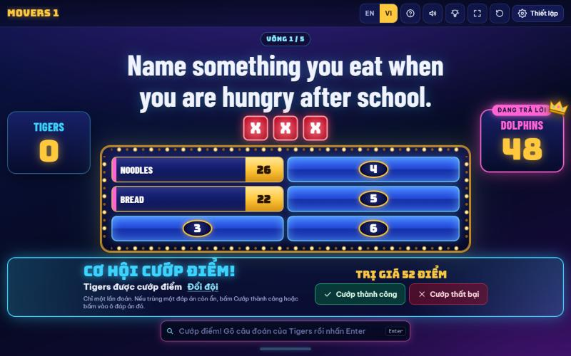
1234
1Đổi đội cướp nếu chọn nhầm
2Cướp thành công (bấm tay)
3Cướp thất bại (bấm tay)
4Hoặc gõ câu đoán rồi Enter
Hình 11. Đủ 3 X: bảng “CƠ HỘI CƯỚP ĐIỂM — TRỊ GIÁ 52 ĐIỂM”.
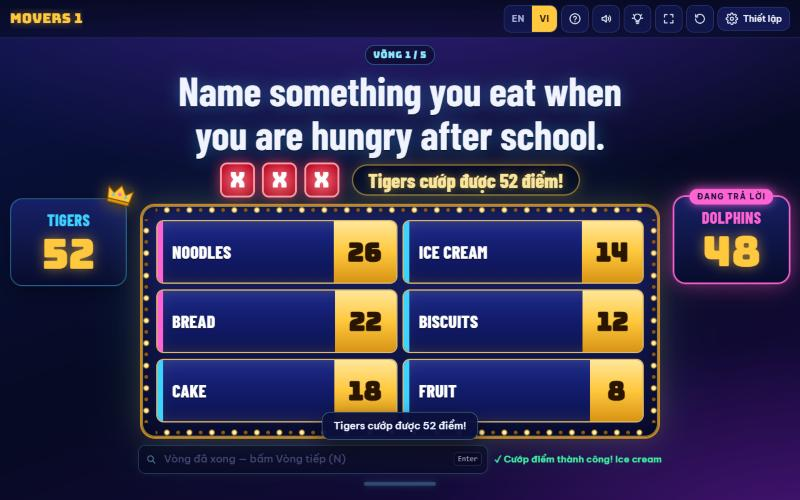
Hình 12. Gõ “ice-cream” → khớp “Ice cream”: Tigers cướp được 52 điểm, bảng mở hết, vương miện chuyển sang Tigers. Ô gõ khóa lại và nhắc bấm Vòng tiếp (N).
1.7 Điều khiển bằng tay và phím tắt
Ô gõ là tiện, nhưng mọi việc vẫn làm được bằng tay — hữu ích khi học sinh nói một ý đúng mà Sheet ghi khác hẳn chữ (game không biết từ đồng nghĩa): thầy/cô cứ bấm thẳng vào ô hoặc phím số.
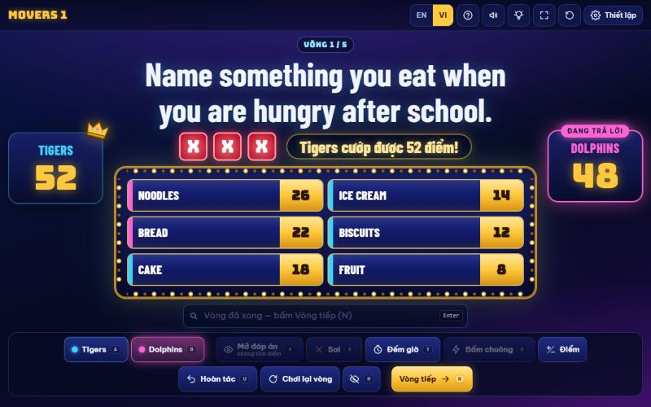
12345678910
1Chọn đội trả lời (A / B)
2Mở đáp án không tính điểm (R)
3Sai (X)
4Đếm giờ (T)
5Bấm chuông (O)
6Cộng/trừ điểm tay
7Hoàn tác (U)
8Chơi lại vòng
9Ẩn bảng điều khiển (H)
10Vòng tiếp (N)
Hình 13. Dải điều khiển hiện ra khi đưa chuột xuống mép dưới; tự thu gọn sau 3 giây.
Vì sao dải điều khiển tự ẩn?
Trên máy chiếu, học sinh cần thấy bảng và câu hỏi to rõ, không phải các nút của giáo viên. Dải thu thành vạch mỏng 12 px ở mép dưới; đưa chuột xuống, nhấn Tab hoặc chạm vạch là hiện lại. Nó không tự ẩn khi đang mở khung Điểm/Âm thanh/Ánh sáng hay đang chờ cướp điểm. Phím tắt luôn chạy dù dải đang ẩn.
Phím
Tác dụng
/ · Enter
Vào ô gõ đáp án (Esc để thoát ra)
1–9, 0
Mở đáp án 1–10, cộng điểm cho đội đang trả lời. Giữ phím = trống dồn rồi mới lật.
A / B
Chọn đội trả lời
X
Đánh dấu sai
R
Mở đáp án ẩn tiếp theo, không tính điểm (cho cả lớp xem phần còn lại)
T
Bật/tắt đồng hồ
O
Mở màn bấm chuông; Q = đội A, P = đội B
U · Ctrl+Z
Hoàn tác thao tác vừa rồi
N
Vòng tiếp (vòng cuối → màn kết quả)
H
Ẩn/hiện bảng điều khiển
F
Toàn màn hình
M
Tắt/bật tiếng
?
Mở hướng dẫn Cách chơi trong game
Esc
Đóng cửa sổ; bỏ qua bấm chuông; hủy câu hỏi “Có phải ý là…?”
Hoàn tác đảo ngược: mở ô, sai, cướp điểm, đổi lượt, cộng/trừ điểm, chuyển vòng. Chơi lại vòng ẩn lại mọi đáp án và bỏ điểm của vòng đó. Điểm mở khung cộng/trừ điểm tay cho từng đội (trong vòng nhân điểm, điểm tay cũng được nhân).
1.8 Bấm chuông, trống dồn, chuỗi đúng
Bấm chuông (face-off)
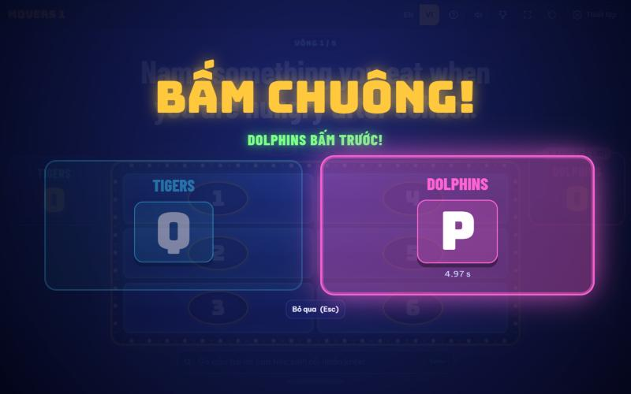
Hình 14. Dolphins bấm P trước; dưới phím ghi thời gian phản xạ.
Bật cho cả trận bằng ô Bấm chuông giành lượt… trong Thông tin trò chơi, hoặc bấm Bấm chuông (O) bất cứ lúc nào.
Mỗi đội cử một bạn đặt tay lên bàn phím. Màn hiện “Đặt tay sẵn… chờ hiệu lệnh GO!”.
Sau “GO!”: đội A bấm Q, đội B bấm P (hoặc chạm vào ô của đội). Đội nhanh hơn được trả lời.
Bấm trước “GO!” bị khóa 1,5 giây. Esc để bỏ qua. Hoàn tác được.
Vì sao Q và P?Hai phím nằm ở hai đầu bàn phím, đủ xa để hai học sinh đứng hai bên không chạm tay nhau, và không trùng phím tắt nào khác.
Trống dồn
Giữ phím số của ô (hoặc giữ chuột trên ô): trống dồn to dần, ô rung với viền vàng; thả ra thì ô lật kèm tiếng chũm chọe. Bấm nhanh thì ô mở ngay như bình thường. Dùng trống dồn cho đáp án quan trọng để tạo hồi hộp.
Chuỗi đúng và đổi ngôi
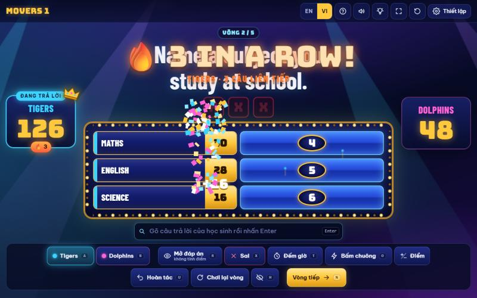
Hình 15. Ba đáp án đúng liên tiếp không sai: băng rôn “3 IN A ROW!”, nhãn 🔥3 dưới bục Tigers, pháo giấy. Đội dẫn đầu đội vương miện.
3 đúng liên tiếp → “3 IN A ROW!”; 5 → “ON FIRE!”. Một lần sai sẽ xóa chuỗi. Khi điểm đội kia vượt lên → “LEAD CHANGE!”, vương miện bay sang bục mới.
1.9 Âm thanh
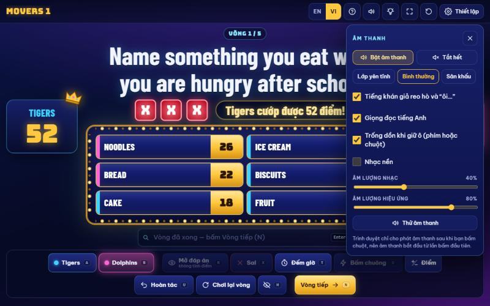
Hình 16. Khung Âm thanh (nút loa trên thanh trên cùng). Khung đỏ: ba mức âm lượng lớp học.
Mức
Gồm
Lớp yên tĩnh
Hiệu ứng 45%, không khán giả, không nhạc
Bình thường
Hiệu ứng 80%, có khán giả (mặc định)
Sân khấu
100%, khán giả + nhạc nền
Công tắc riêng: Tiếng khán giả reo hò và “ôi…”, Giọng đọc tiếng Anh (3-2-1-go, Round two, Correct, Wrong, Hurry up, Congratulations…), Trống dồn, Nhạc nền; hai thanh trượt âm lượng; nút Thử âm thanh.
Vì sao lúc mới mở game không có tiếng?
Mọi trình duyệt cấm trang web tự phát tiếng khi người dùng chưa tương tác (để quảng cáo không la hét). Âm thanh chỉ được “mở khóa” sau cú bấm chuột hoặc phím đầu tiên. Vì vậy trước giờ học hãy bấm một lần vào trang (vd. nút Thử âm thanh). Toàn bộ âm thanh nằm sẵn trong file game nên mất mạng vẫn có tiếng.
Nguồn âm: Kronbits, ObsydianX, Kenney (CC0); tiếng khán giả của Gregor Quendel (CC BY 4.0 — đã ghi công trong mục Cách chơi và classroom-feud/SOUNDS.md). Muốn đổi tiếng nào, nói với Claude tên thao tác và tiếng mong muốn.
1.10 Hiệu ứng ánh sáng và “giảm chuyển động”
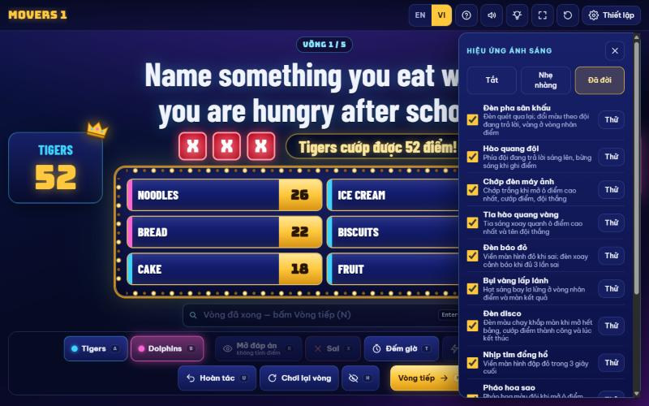
Hình 17. Khung Hiệu ứng ánh sáng (nút bóng đèn): mức Tắt / Nhẹ nhàng / Đã đời, mỗi hiệu ứng có nút Thử.
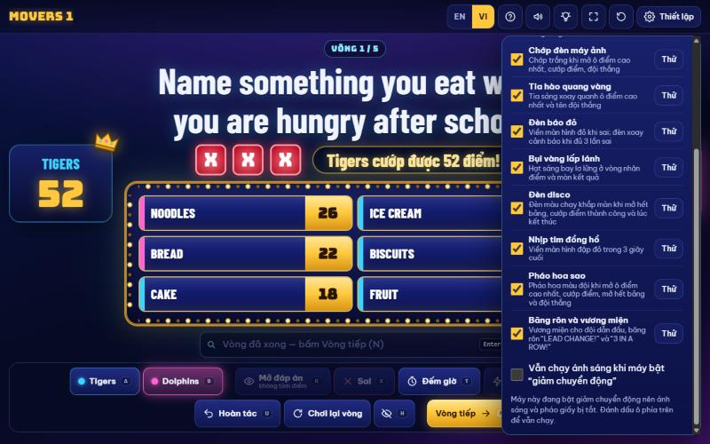
Hình 18. Cuối khung: ô “Vẫn chạy ánh sáng khi máy bật ‘giảm chuyển động’”.
10 hiệu ứng: đèn pha sân khấu, hào quang đội, chớp máy ảnh, tia hào quang vàng, đèn báo đỏ, bụi vàng lấp lánh, đèn disco, nhịp tim đồng hồ, pháo hoa sao, băng rôn và vương miện. Nhẹ nhàng giữ 6 hiệu ứng êm; Đã đời bật tất cả (mặc định). Không hiệu ứng nào chớp quá 3 lần/giây. Cài đặt lưu trong trình duyệt.
Vì sao có máy không thấy ánh sáng/pháo giấy?
Windows có tùy chọn “Hiệu ứng hoạt ảnh” (Animation effects) trong Cài đặt → Trợ năng → Hiệu ứng hình ảnh. Khi tắt, trình duyệt báo cho mọi trang “người dùng muốn giảm chuyển động”, và game tôn trọng điều đó: tắt ánh sáng, pháo giấy, pháo hoa, bục nảy (băng rôn và bục xếp hạng vẫn hiện nhưng đứng yên). Nếu máy dạy bị như vậy mà thầy/cô vẫn muốn hiệu ứng, tích ô “Vẫn chạy ánh sáng…” ở cuối khung (Hình 18) — game sẽ nhớ lựa chọn này.
1.11 Màn kết quả, MVP, xuất kết quả
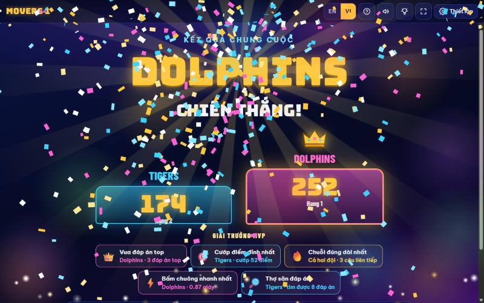
Hình 19. Màn kết quả: đội thắng, bục xếp hạng (đội nhì lên trước, đội thắng lên sau với vương miện), mưa pháo giấy.
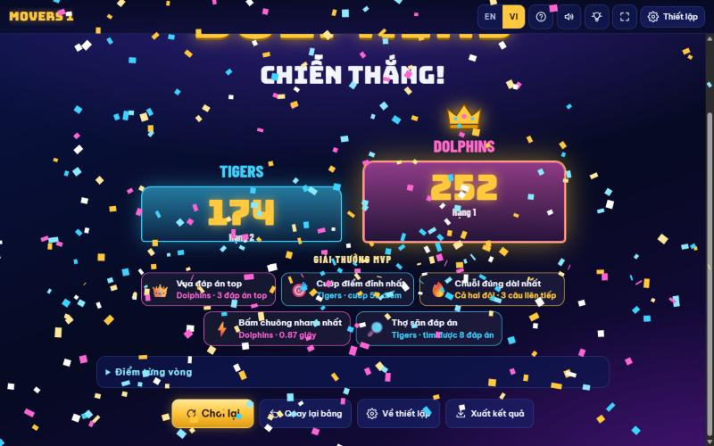
12
1Điểm từng vòng (bấm để mở)
2Xuất kết quả (file CSV mở bằng Excel)
Hình 20. Cuộn xuống: Giải thưởng MVP, Điểm từng vòng, các nút Chơi lại / Quay lại bảng / Về thiết lập / Xuất kết quả.
Giải MVP (chỉ hiện giải có người đạt; bằng nhau thì “Cả hai đội”): Vua đáp án top (mở nhiều ô điểm cao nhất), Cướp điểm đỉnh nhất, Chuỗi đúng dài nhất, Bấm chuông nhanh nhất, Thợ săn đáp án (tìm được nhiều đáp án nhất). Xuất kết quả tải về file .csv (mở bằng Excel) ghi điểm từng vòng — tiện để lưu điểm thưởng của lớp.
Gợi ý sư phạmGiải MVP cho phép khen cả đội thua (vd. “bấm chuông nhanh nhất”), giữ không khí vui cho cả lớp.
1.12 Mẹo dùng với máy chiếu
Toàn màn hình (F) trước khi học sinh vào lớp. Game tự co giãn theo màn hình; câu hỏi dài tự thu nhỏ để không chèn bảng.
Nếu dùng chế độ Duplicate (hai màn giống nhau) thì học sinh thấy cả ô gõ — không sao, đáp án chỉ hiện khi ô lật. Không gõ trước đáp án mẫu trước mặt học sinh.
Bấm một lần vào trang để mở khóa âm thanh, bấm Thử âm thanh để chỉnh loa.
Phòng ồn → mức Sân khấu; phòng bên cạnh đang thi → Lớp yên tĩnh.
Máy chiếu mờ/phòng sáng: ánh sáng mức Nhẹ nhàng cho dễ đọc chữ.
Dùng chuột không dây hoặc bàn phím rời để đi lại trong lớp; mọi thao tác đều có phím tắt.
Mở game và chọn bộ trước giờ học khi còn mạng; Sheet đã tải sẽ được nhớ nếu mạng rớt giữa giờ.
Bản chất: Sheet là một “hợp đồng”
Game không có ai đứng giữa để “hiểu” Sheet. Nó đọc Sheet theo đúng tên tab và đúng tiêu đề cột. Bên viết (thầy/cô, Claude) và bên đọc (game) phải giữ cùng một quy ước — gọi là hợp đồng, ghi trong classroom-feud/SHEET-BANK.md. Giữ đúng hợp đồng thì mọi thứ chạy; đổi tên một tab hay một tiêu đề cột là game “mù” phần đó.
2.1 Cấu trúc tab và cột
Có 5 tab: Hướng dẫn (game bỏ qua), Starters, Movers, Flyers, KET. Bốn tab cấp độ có cùng cột; dòng 1 là tiêu đề, mỗi dòng sau là một câu hỏi = một vòng chơi.
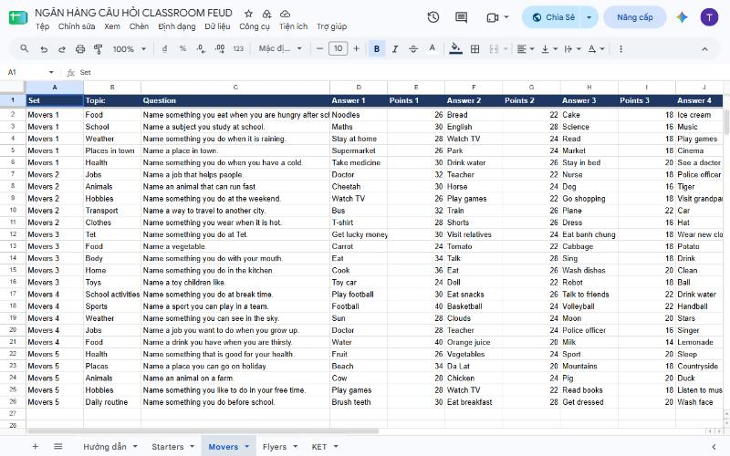
ABC
Hình 21. Tab Movers: cột A Set (tên bộ), B Topic, C Question, rồi các cặp Answer/Points (khung đỏ trên). Khung đỏ dưới: các tab cấp độ — không đổi tên.
Cột
Tiêu đề
Nội dung và quy tắc
A
Set
Tên bộ: <Cấp> <số>, vd. Movers 3. Các dòng cùng bộ nằm liền nhau.
B
Topic
Chủ đề của câu (Food, Weather…). Hiện trong danh sách bộ.
C
Question
Câu hỏi tiếng Anh, tối đa 200 ký tự.
D, F, H … R
Answer 1 … Answer 8
Đáp án, tối đa 80 ký tự. Có thể ghi nhiều cách nói: TV / Television.
E, G, I … S
Points 1 … Points 8
Điểm, số nguyên 0–999. Cặp để trống thì bỏ qua.
T
Approved
Ô duyệt (danh sách chọn Y/N). Trống = chưa duyệt.
U
Note
Ghi chú tự do; game bỏ qua.
Vì sao mỗi bộ có 5 câu, mỗi câu một chủ đề khác nhau?
Một trận thường 5 vòng (vừa một tiết). Trộn chủ đề giúp học sinh yếu ở chủ đề này vẫn có cơ hội ở chủ đề khác, và ôn được nhiều mảng từ vựng trong một trận. Chỉ khi thầy/cô xin rõ “bộ một chủ đề” thì cả 5 câu mới cùng chủ đề.
2.2 Đặt tên bộ và bước duyệt
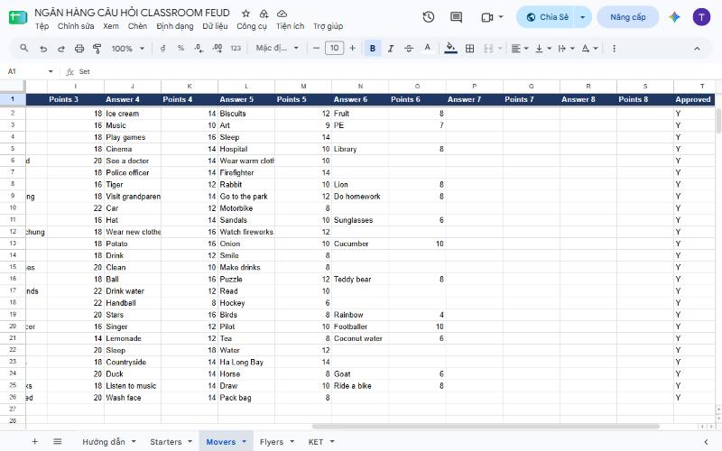
Hình 22. Kéo sang phải: cột T Approved (khung đỏ). Tab Movers hiện đã duyệt Y cho cả 25 câu.
Tên bộ phải đúng dạng Movers 1, Movers 2… (tên cấp + khoảng trắng + số). Bộ mới nối tiếp số cuối cùng. Game liệt kê bộ theo thứ tự xuất hiện trong Sheet.
Duyệt: gõ hoặc chọn Y ở cột Approved. Game cũng chấp nhận Yes, X, ✓, OK, Có, Duyệt, 1, TRUE (không phân biệt hoa thường). Trống hoặc N = chưa duyệt.
Bộ chỉ hiện trong game khi có ít nhất một câu đã duyệt; câu chưa duyệt trong bộ bị bỏ qua (bộ sẽ ít vòng hơn).
Vì sao phải có bước duyệt?
Câu hỏi do Claude tạo có thể chưa hợp lớp mình: từ quá khó, đáp án lạ với học sinh Việt Nam, điểm chưa hợp lý. Cột Approved là cửa kiểm soát chất lượng: không câu nào lên màn chiếu mà thầy/cô chưa đọc. Nó cũng cho phép Claude ghi thêm bộ mới bất cứ lúc nào mà không sợ làm lộn xộn giờ học — bộ mới chưa duyệt thì game chưa thấy. Vì vậy Claude được dặn không bao giờ tự điền cột này.
2.3 Tự thêm câu hỏi bằng tay
Mở tab đúng cấp, xuống dòng trống đầu tiên dưới bộ cuối cùng.
Cột A: tên bộ mới (vd. Movers 6) — ghi ở cả 5 dòng của bộ.
Từ cột D: đáp án rồi điểm, xen kẽ. 5–6 đáp án, xếp từ phổ biến nhất, điểm giảm dần, tổng ≈ 100.
Cột T: chọn Y khi đã ưng. Mở game → Tải lại.
Những lỗi làm game bỏ qua dòng
Thiếu câu hỏi; đáp án có chữ mà ô điểm trống; điểm không phải số 0–999 (vd. “10đ”, “ten”); tên tab/tiêu đề cột bị đổi; cột bị chèn thêm làm lệch vị trí. Dòng đã duyệt mà lỗi sẽ bị bỏ qua — trong game bấm Xem lỗi để biết số dòng cần sửa. Đừng đổi tên tab, đừng chèn/xóa cột, đừng sửa dòng tiêu đề.
2.4 Nhờ Claude tạo bộ mới
Claude có skill feud-questions (mục 3.5): đọc tab của cấp đó để biết số bộ tiếp theo và tránh lặp câu cũ, viết câu theo từ vựng Cambridge của cấp, ghi thẳng vào Sheet, đọc lại để kiểm tra, rồi báo cho thầy/cô danh sách câu. Cột Approved để trống chờ thầy/cô duyệt.
Ví dụ yêu cầu:
› Thêm 2 bộ câu hỏi cho Movers, có một câu về Tết.
› Tạo 1 bộ cho mỗi cấp, chủ đề gợi ý: Food.
› Làm 1 bộ KET chỉ một chủ đề Technology (cả 5 câu cùng chủ đề).
› Câu “Name a job…” ở Movers 2 quá dễ, viết lại khó hơn chút cho lớp 2A.
› Xuất bộ Flyers chủ đề School ra file Excel. (chỉ khi thật sự cần file .xlsx)
Vì sao chủ đề thầy/cô đưa chỉ là “gợi ý”?
Theo quy ước ở 2.1, mỗi bộ trộn 5 chủ đề. Nên “chủ đề Food” nghĩa là Food có mặt trong 1–2 câu, các câu còn lại lấy chủ đề khác của cấp đó. Muốn cả bộ cùng một chủ đề thì nói rõ “chỉ một chủ đề”.
Khi Claude không ghi được vào Sheet
Claude ghi Sheet qua connector Google Sheets gắn với tài khoản Claude đang dùng. Sau khi đổi tài khoản Claude, connector có thể chưa được kết nối — Claude sẽ báo. Thầy/cô bật lại connector Google trong phần cài đặt Claude (đăng nhập Google là việc của thầy/cô, Claude không làm thay). Game thì không cần connector: nó đọc Sheet công khai.
2.5 Tải lại, bộ nhớ đệm và khi mất mạng
Mỗi lần mở game, game tự tải lại Sheet. Đang mở mà vừa sửa/duyệt Sheet → bấm Tải lại.
Game lưu bản tải gần nhất trong trình duyệt. Mất mạng vẫn chọn bộ được; dòng trạng thái ghi “Dữ liệu lúc …”.
Bản lưu này cũng theo nguyên tắc “mỗi bản game một ngăn kéo” (mục 1.1): bản Desktop có bộ nhớ đệm riêng.
Vì sao game đọc được Sheet mà không cần đăng nhập?
Sheet được chia sẻ “Bất kỳ ai có đường liên kết”. Google cho phép tải sheet công khai dưới dạng bảng CSV qua một địa chỉ đặc biệt; game tải từng tab theo cách đó. Game chỉ đọc, không bao giờ sửa Sheet.
2.6 Chia sẻ sheet và rủi ro “ai cũng sửa được”
Hiện Sheet để quyền “Bất kỳ ai có đường liên kết — Người chỉnh sửa” (thầy/cô đã chọn giữ như vậy).
Quyền
Game đọc được?
Rủi ro
Ai có link — Người chỉnh sửa (hiện tại)
Có
Ai cầm link đều sửa/xóa được câu hỏi. Link nằm công khai trong repo GitHub và trong file game.
Ai có link — Người xem
Có
Người lạ chỉ xem được. Claude vẫn ghi được (qua connector, bằng tài khoản Google của thầy/cô có quyền sửa).
Bị hạn chế
Không
Game báo “sheet chưa chia sẻ”.
Nếu một ngày Sheet bị sửa bậy
Google Sheets → Tệp → Nhật ký phiên bản → Xem nhật ký phiên bản, chọn mốc thời gian trước khi bị sửa, bấm Khôi phục phiên bản này. Để chắc ăn hơn có thể chuyển sang quyền “Người xem” ở nút Chia sẻ — game vẫn chạy bình thường.
2.7 Dùng một sheet khác
Tạo bản sao Sheet hiện tại (Tệp → Tạo bản sao) để giữ đúng tab và cột.
Chia sẻ bản mới “Bất kỳ ai có đường liên kết”.
Trong game bấm Link Google Sheet, dán link (hoặc ID), bấm Lưu và tải.
Lựa chọn này lưu trong trình duyệt (từng bản game). Nhớ báo Claude ID sheet mới để skill feud-questions ghi đúng chỗ.
Phần 3
Làm việc với Claude
3.1 Context là gì và vì sao phải giữ nó thấp
Context là “bàn làm việc” của Claude trong một cuộc trò chuyện: mọi tin nhắn, mọi file Claude đã đọc, mọi kết quả lệnh đều nằm trên bàn đó. Bàn có giới hạn. Khi bàn đầy, phần cũ bị tóm tắt lại và chi tiết dễ bị mất; càng đầy Claude càng chậm và dễ sót.
Vì sao không làm hết mọi việc trong một cuộc trò chuyện?
File game nặng hơn 500 KB. Chỉ cần sửa vài tính năng là bàn làm việc đầy những đoạn code đã đọc. Nếu cuộc trò chuyện chính vừa điều phối vừa sửa code, nó sẽ đầy rất nhanh và quên các quyết định quan trọng. Giải pháp: tách người điều phối khỏi người làm việc nặng.
3.2 Phương pháp session-relay
Tên gọi “relay” = chạy tiếp sức. Quy trình nằm trong skill .claude/skills/session-relay/SKILL.md và được nhắc trong CLAUDE.md, nên Claude tự làm theo.
Vai
Làm gì
Phiên chính (cuộc trò chuyện thầy/cô đang nói chuyện)
Nhận yêu cầu, chia thành task, mở session phụ, kiểm tra kết quả, ghi TODO.md, bàn giao. Việc nhỏ (trả lời câu hỏi, sửa một chỗ) thì làm luôn.
Session phụ (hiện trong thanh bên, tên kiểu feud-answer-input)
Làm một task nặng: sửa game, tạo câu hỏi, viết tài liệu… Xong thì commit và báo lại vài dòng.
Vòng đời của một phiên chính
Bắt đầu: đọc TODO.md, chạy git pull, kiểm tra session phụ còn chạy, làm tiếp mục đầu tiên chưa xong.
Nhận nhiều task: task lớn → mở session phụ (mỗi task một session); task nhỏ → làm luôn. Ghi ngay session vừa mở vào TODO.md.
Theo dõi context bằng công cụ get_usage sau mỗi task.
Ở mức 40–50%: cập nhật TODO.md → commit → push → báo thầy/cô → tự clear cuộc trò chuyện.
Sau khi clear: thầy/cô chỉ cần gõ “tiếp tục”. Phiên mới đọc CLAUDE.md → TODO.md → làm tiếp.
Vì sao lại là 40–50%, không phải 90%?
Bản thân việc bàn giao cũng tốn chỗ (viết TODO, commit, push, có thể gặp lỗi push phải xử lý). Dừng ở 40% chừa đủ chỗ để bàn giao gọn gàng khi đầu óc Claude còn “tỉnh”. Và thứ tự commit → push → rồi mới clear là bắt buộc: nếu push lỗi mà đã clear thì bàn giao có thể mất. Push lỗi thì Claude dừng lại và báo, không clear.
3.3 TODO.md — trí nhớ bàn giao
TODO.md ở gốc repo là nguồn sự thật duy nhất về việc đang dở. Sau khi clear, Claude không nhớ gì ngoài những gì có trong TODO.md, CLAUDE.md, các file và lịch sử Git.
Mục trong TODO.md
Chứa gì
Đang làm tiếp theo
Việc cụ thể đầu tiên phiên sau phải làm, kèm file/lệnh.
Session phụ đang chạy
Bảng tên, ID, task, nhánh, trạng thái.
Chờ
Việc chờ thầy/cô (vd. nghe thử loa thật, duyệt câu hỏi).
Đã xong gần đây
Việc vừa xong, commit nào.
Ghi chú & quyết định đã chốt
Quyết định và lý do (vd. giữ game một file, chỉ dùng âm CC0, không đưa PDF giáo trình lên repo).
Thầy/cô cũng dùng được TODO.md
Mở TODO.md trên GitHub để xem nhanh dự án đang ở đâu. Muốn Claude nhớ một quyết định lâu dài, hãy nói: “ghi vào TODO phần quyết định: …”.
3.4 Đổi tài khoản Claude
Vì sao đổi tài khoản không mất gì?
Mọi thứ quan trọng nằm ngoài Claude: code và TODO trong thư mục + GitHub; câu hỏi trong Google Sheet; quyền push GitHub lưu trên máy (Git Credential Manager), không phụ thuộc tài khoản Claude. Tài khoản Claude chỉ là “người thợ”; bàn giao qua TODO.md làm cho thợ nào vào cũng làm tiếp được.
Ở tài khoản cũ: nói “bàn giao” — Claude cập nhật TODO.md, commit, push.
Đăng xuất, đăng nhập tài khoản mới (thầy/cô tự làm).
Mở lại đúng thư mục C:\Users\Admin\Downloads\HSK, gõ “tiếp tục”.
Nếu cần ghi Google Sheet: bật connector Google Sheets cho tài khoản mới (mục 2.4).
3.5 Các skill đã tạo
Skill là một bản hướng dẫn nghề viết sẵn cho Claude (file SKILL.md), nằm trong repo ở .claude/skills/. Claude tự nạp skill khi yêu cầu khớp với mô tả của nó — thầy/cô không cần gọi tên.
Skill
Làm gì
Kích hoạt khi nói
session-relay
Quy trình điều phối + session phụ + theo dõi context + bàn giao qua TODO.md (Phần 3.2).
“tiếp tục”, “làm tiếp”, “bàn giao”, giao nhiều việc một lúc.
feud-questions
Viết câu hỏi theo cấp Cambridge, ghi vào Sheet, kiểm tra lại; xuất Excel khi được yêu cầu rõ.
“thêm bộ câu hỏi”, “làm câu hỏi cho Movers”, hoặc chỉ đưa một chủ đề.
Vì sao skill nằm trong repo?Vì nó đi theo dự án: đổi máy, đổi tài khoản Claude, clone repo về là Claude có ngay đúng “nghề”. Muốn đổi cách làm (vd. mỗi bộ 6 câu) thì nhờ Claude sửa skill — lần sau tự làm theo cách mới.
3.6 Cách viết yêu cầu tốt
Nói kết quả mong muốn, không cần nói cách làm: “học sinh hay nói ‘bike’ mà bảng ghi ‘Bicycle’, muốn game chấp nhận” tốt hơn “sửa hàm so khớp”.
Nêu bối cảnh lớp học: lớp mấy, máy chiếu gì, phòng ồn hay yên.
Một yêu cầu = một việc rõ ràng. Nhiều việc thì liệt kê 1, 2, 3 — Claude sẽ chia session.
Nói điều không được đổi: “giữ nguyên âm thanh hiện tại”.
Hỏi trước khi làm khi chưa chắc: “đề xuất trước, chưa sửa” — như file PROPOSAL-FX.md đã làm.
› Tiếp tục.
› Hôm qua dạy 3A: phím Q hay bị kẹt, và tiếng khán giả hơi to. 1) kiểm tra phím Q, 2) giảm tiếng khán giả ở mức Bình thường. Làm rồi push.
› Đề xuất 3 cách làm màn kết quả có biểu đồ điểm theo vòng, chưa sửa code.
› Chép bản game mới nhất ra Desktop, thư mục CLASSROOM FEUD.
3.7 Kiểm tra việc session phụ đã làm
Session phụ hiện trong thanh bên; bấm vào để đọc báo cáo cuối (vài dòng: đã làm gì, commit/nhánh nào, đã thử gì, chưa thử gì).
Phiên chính nhận báo cáo và tự kiểm tra lại (đọc thay đổi, không tin báo cáo suông) rồi mới ghi “đã xong” vào TODO.md.
Thầy/cô thử thật những gì báo cáo ghi “chưa thử” — thường là loa, máy chiếu, cảm giác trong lớp.
Nếu session làm trên nhánh riêng: nó chỉ vào game chính khi thầy/cô đồng ý gộp (merge). Chưa gộp thì link web chưa đổi.
Muốn sửa thêm: nhắn thẳng vào session đó (nó còn nhớ việc), hoặc nói với phiên chính.
3.8 Những việc Claude không làm được (hoặc không được làm)
Việc
Vì sao / thầy/cô làm thế nào
Đăng nhập, gõ mật khẩu, mã xác minh
Quy tắc an toàn: Claude không nhập mật khẩu. Thầy/cô tự đăng nhập Google, GitHub, Claude.
Nghe loa, nhìn máy chiếu thật
Claude chỉ “nghe” được dữ liệu âm thanh, không nghe được tai người. Âm lượng, độ chói phải thầy/cô thử và kể lại.
“Công khai” nghĩa là gì?
Ai trên mạng cũng xem và tải được mọi file trong repo, kể cả lịch sử cũ. Vì vậy: không đưa lên mật khẩu, khóa API, họ tên/thông tin học sinh, hay tài liệu có bản quyền. File .gitignore đã chặn mọi file *.pdf (giáo trình) — chỉ riêng PDF hướng dẫn này được cho phép. Dữ liệu lớp học nằm trong trình duyệt nên không bao giờ lên GitHub. Âm thanh chỉ dùng nguồn CC0/CC BY có ghi công.
4.2 Commit = lịch sử và bản sao lưu; cách quay lại
Mỗi commit là một “ảnh chụp” toàn bộ dự án tại một thời điểm, kèm lời mô tả (vd. Classroom Feud: type-in answer box…). Push là gửi các ảnh chụp đó lên GitHub. Vì GitHub giữ mọi ảnh chụp, không thay đổi nào là mất hẳn.
Xem lịch sử
Trên GitHub: mở file → nút History. Hoặc hỏi Claude: “liệt kê 10 thay đổi gần nhất của game”.
Quay lại bản cũ
Cách an toàn nhất — nhờ Claude: “bản game trước khi thêm ô gõ đáp án chạy ổn hơn, quay game về bản đó rồi push”. Claude dùng git revert (tạo commit mới đảo ngược thay đổi), không xóa lịch sử, nên muốn quay lại bản mới vẫn được.
Cần gấp trong giờ học: trên GitHub, mở History của Classroom-Feud.html, chọn commit cũ → Browse files → mở file → Download raw file. Mở file vừa tải bằng bấm đúp là chơi được ngay (dữ liệu lớp: xem mục 1.1).
4.3 GitHub Pages tự cập nhật
GitHub Pages được bật với nguồn là nhánh main, thư mục gốc. Mỗi lần có push lên main, GitHub tự dựng lại trang trong khoảng 1–2 phút; link web không bao giờ đổi.
Link chưa thấy bản mới?Chờ 1–2 phút rồi nhấn Ctrl+F5 (tải lại bỏ qua bộ nhớ đệm). Xem trạng thái dựng trang ở tab Actions của repo (dấu ✓ xanh là xong).
4.4 Giữ bản Desktop luôn mới
Bản Desktop không tự cập nhật. Hiện thư mục Desktop\CLASSROOM FEUD có bản cũ (28-10) và file Luật Chơi. Khi có bản game mới:
Cách nhanh nhất: nói với Claude “chép bản game mới nhất ra Desktop”.
Hoặc tự làm: chép C:\Users\Admin\Downloads\HSK\classroom-feud\Classroom-Feud.html dán vào Desktop\CLASSROOM FEUD, ghi đè file cùng tên.
Hoặc từ máy khác: mở link web, nhấn Ctrl+S, chọn “Trang web, chỉ HTML”.
Ghi đè file có mất dữ liệu lớp không?Không. Dữ liệu không nằm trong file HTML mà nằm trong ngăn kéo file:// của trình duyệt. File mới, cùng trình duyệt → vẫn thấy lớp và lịch sử cũ.
4.5 Sao lưu lớp và thư viện
Vì sao phải tự sao lưu?
Lớp, lịch sử chơi và thư viện Excel chỉ nằm trong trình duyệt của một máy. Mất khi: xóa dữ liệu duyệt web, cài lại Windows, đổi máy, đổi trình duyệt. GitHub và Google Sheet không giữ những thứ này.
Sao lưu: Thiết lập → Thư viện câu hỏi → Sao lưu thư viện. Tải về một file .json chứa mọi bộ trong thư viện và mọi lớp (kèm lịch sử). Cất lên Google Drive. Nên làm mỗi tháng hoặc sau đợt tạo lớp mới.
Khôi phục / chuyển sang bản khác hoặc máy khác: mở game ở nơi mới → Thư viện câu hỏi → Khôi phục bản sao lưu → chọn file. Dữ liệu được gộp vào cái đang có.
Một bộ câu hỏi lẻ: nút Xuất file / Nhập file ở thanh dưới.
Cẩn thậnXóa toàn bộ dữ liệu (thanh dưới) xóa câu hỏi đang soạn, bộ đã lưu và trận đang chơi — nhưng giữ thư viện, danh sách lớp và link Google Sheet. Xóa dữ liệu duyệt web của trình duyệt thì mất tất cả.
4.6 Bảng xử lý sự cố
Hiện tượng
Nguyên nhân thường gặp
Cách xử lý
Không có tiếng
Chưa bấm vào trang (trình duyệt chặn tự phát tiếng); tiếng đang tắt (M); loa máy tính tắt; trình duyệt lạ.
Bấm một lần vào trang → Thử âm thanh. Kiểm tra nút loa trong game và loa Windows. Dùng Chrome hoặc Edge bản mới.
Không thấy ánh sáng, pháo giấy
Windows tắt “Hiệu ứng hoạt ảnh” (giảm chuyển động); hoặc ánh sáng đang mức Tắt.
Khung Light show → tích “Vẫn chạy ánh sáng…”, chọn mức Đã đời.
Không thấy bộ câu hỏi từ Sheet
Chưa duyệt (Approved trống); chưa Tải lại; sai cấp độ; tên tab/tiêu đề cột bị đổi; tên bộ sai dạng; Sheet chưa chia sẻ; mất mạng.
Gõ Y ở cột Approved → bấm Tải lại. Kiểm tra ô Cấp độ. Đọc thông báo lỗi; bấm Xem lỗi để biết dòng hỏng. Kiểm tra tên tab đúng Starters/Movers/Flyers/KET.
Bộ có ít vòng hơn 5
Một số câu trong bộ chưa duyệt hoặc dòng bị lỗi.
Duyệt nốt / sửa dòng lỗi rồi Tải lại.
Mất lớp / lịch sử
Đang mở bản khác (web ↔ Desktop), trình duyệt khác, cửa sổ ẩn danh.
Mở đúng bản và trình duyệt đã tạo lớp. Lần sau dùng Sao lưu/Khôi phục (4.5).
Mở ra bản cũ (thiếu tính năng mới)
Đang bấm đúp file cũ trên Desktop (vd. “ban cu 28-10”) hoặc file đã tải về trước đó.
Nhìn thanh địa chỉ: file:/// là file trên máy. Dùng link web, hoặc chép lại bản mới (4.4).
Link web chưa cập nhật
GitHub Pages đang dựng lại; trình duyệt giữ bản cũ.
Chờ 1–2 phút, nhấn Ctrl+F5.
Ô gõ chấm sai một đáp án đúng
Học sinh dùng từ đồng nghĩa mà Sheet chưa ghi.
Bấm tay vào ô/phím số. Sau giờ học thêm cách nói vào Sheet: Bike / Bicycle.
Bấm phím tắt không ăn
Con trỏ đang trong ô gõ.
Nhấn Esc để ra khỏi ô.
Claude không ghi được Sheet
Connector Google chưa bật cho tài khoản Claude hiện tại.
Bật lại connector Google Sheets (2.4).
Claude báo push lỗi
Hết đăng nhập GitHub trên máy, mất mạng, xung đột.
Đọc lỗi Claude báo; đăng nhập GitHub lại khi được hỏi. Claude sẽ không clear khi chưa push xong.
Câu hỏi thường gặp
Học sinh mở link web ở nhà có thấy lớp và lịch sử của tôi không?
Không. Dữ liệu nằm trong trình duyệt máy của thầy/cô. Học sinh chỉ thấy câu hỏi mẫu, hoặc các bộ đã duyệt trong Sheet nếu chọn cấp độ.
Tôi sửa một câu trong Sheet giữa giờ học, game có đổi ngay không?
Chỉ sau khi bấm Tải lại và chọn lại bộ (Dùng bộ này). Trận đang chơi giữ nguyên nội dung đã nạp.
Một câu tôi muốn bỏ tạm thời?
Đổi Approved thành N (hoặc xóa Y), rồi Tải lại. Không cần xóa dòng.
Có thể sửa câu hỏi ngay trong game không?
Có, trong khối “Các vòng chơi” trước khi bắt đầu. Nhưng sửa ở đó chỉ áp dụng cho trận đó; muốn giữ lâu dài hãy sửa trong Sheet.
Một vòng có tối đa bao nhiêu đáp án?
8 trong Sheet (cột Answer 1–8). Bàn phím mở trực tiếp được ô 1–10. Khuyên dùng 5–6 cho vừa bảng và vừa sức học sinh.
Chơi nhiều hơn 2 đội được không?
Game thiết kế cho 2 đội. Lớp đông: chia 2 đội lớn, mỗi lượt cử một người trả lời.
Nếu mất mạng cả buổi?
Dùng bản Desktop đã mở ít nhất một lần khi có mạng (để có bộ nhớ đệm Sheet), hoặc các bộ trong thư viện / bộ đã lưu. Âm thanh vẫn chạy vì nhúng sẵn.
Claude có tự ý sửa game khi tôi không yêu cầu không?
Không. Claude làm theo yêu cầu và TODO.md; đề xuất lớn được viết thành bản đề xuất để thầy/cô duyệt trước.
Tôi có cần học Git không?
Không bắt buộc. Chỉ cần hiểu: commit = ảnh chụp, push = gửi lên GitHub, và mọi bản cũ đều lấy lại được. Các lệnh cụ thể Claude làm.
Làm sao biết đang dùng bản game nào?
Nhìn thanh địa chỉ: https://trantrungg135family-tech.github.io/… là bản web mới nhất; file:///C:/Users/… là file trên máy — xem tên thư mục để biết file nào.
Trang tóm tắt — dán cạnh máy tính
Phím tắt trong trận
/Enter
Vào ô gõ đáp án
Esc
Thoát ô gõ / đóng cửa sổ
1–0
Mở ô 1–10 (giữ = trống dồn)
AB
Chọn đội trả lời
X
Sai
R
Mở ô tiếp, không tính điểm
O → Q / P
Bấm chuông: đội A / đội B
T
Đồng hồ
UCtrl+Z
Hoàn tác
N
Vòng tiếp / kết quả
H · F · M
Ẩn điều khiển · Toàn màn hình · Tắt tiếng
?
Cách chơi
Khi game hỏi “Có phải ý là…?”
Enter
Đúng → mở ô
Backspace
Không → tính sai
Esc
Hủy, gõ lại
Luật nhanh
3 X → đội kia đoán 1 lần để cướp toàn bộ điểm còn lại.